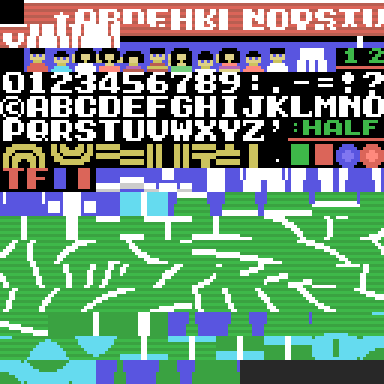
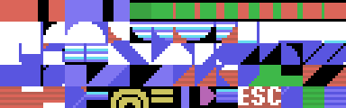
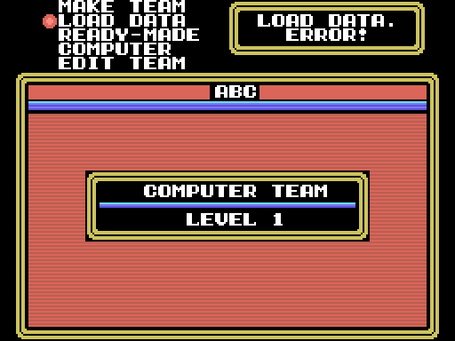

32 KB with no mapper in pages 1 and 2 (0x4000-0xBFFF), an AB header with INIT at 0x4010 and the other three pointers at zero. INIT enables the slot in page 2, hooks H.TIMI to 0x606E and enters the loop at 0x4044.
| range | what it is |
|---|---|
| 0x4010-0x8ED4 | code (20,642 bytes in all, with the final stretch) |
| 0x8ED5-0x8F7D | the sound: 64 periods, the mixer, 13 pointers and 13 priorities |
| 0x8F7E-0x9664 | the sound pieces and their shared phrases |
| 0x9665-0x9724 | the net and the ball, six sprite patterns |
| 0x9725-0xA38D | 196 sprite patterns of the players, compressed |
| 0xA38E-0xA74D | the poses: 40 layouts and 160 poses |
| 0xA74E-0xABA7 | the 250 patterns of the court, the menus and the font |
| 0xABA8-0xAEBF | three colour tables, one per court |
| 0xAEC0-0xB967 | colours, plays, name tables, the logo and the court map |
| 0xB968-0xBFD3 | code: controls, dispatcher and the computer's intelligence |
| 0xBFD4-0xBFFF | 44 bytes of 0xFF |
And scattered through the code, the small tables: the texts (0x7C55), the foul labels (0x796F), the look pairs (0x80E4), the tip-off positions (0x5255), the directions (0x693D, 0xBA7B) and the team-mates (0xBF1E).

marker value count. The colours at 0x2100.Every block ends exactly where the next one starts and measures what the code copies afterwards; the tests check it.
SCREEN 2 as INIGRP leaves it: patterns at 0x0000 (the court's 250 in all three thirds and the logo at 0xB0-0xFF), names at 0x1800, sprite attributes at 0x1B00 and 0x1F00, colours at 0x2000 (the chosen court's table in all three thirds, with 0xAEC0 on top at 0x2100) and sprite patterns at 0x3800: each player has four at 0x3800 + n × 128 that 0x5FD1 copies from RAM when the pose changes; the net at 0x3B00 and the ball, the shadow and the arrow at 0x3B60.

Six 0x30-byte player records at 0xE500 (0x4DBF indexes them; +1 is Y, the depth, and +3 is X along the court, signed from the centre), the ball at 0xE620, the shadow of the sprite attributes at 0xE650, the two teams at 0xE851 and 0xE93D, the plays at 0xEA89, the sound variables at 0xEFE1-0xEFE8 and the window column at 0xE830. At 0xC000-0xC2FF are the perspective tables that 0x5A58 builds when a match starts, and 0xC400 is the buffer everything is decompressed into.
A team is saved as a BSAVE block: the cassette BIOS writes ten 0xD0 bytes and a six-letter name (the team's three letters and three 0x7F), then the start, end and execution addresses and the team's 0xEC bytes (0x8C33). Loading (0x8C71) looks for a header whose name ends in those three 0x7F, and VERIFY (0x8C87) compares byte for byte.
